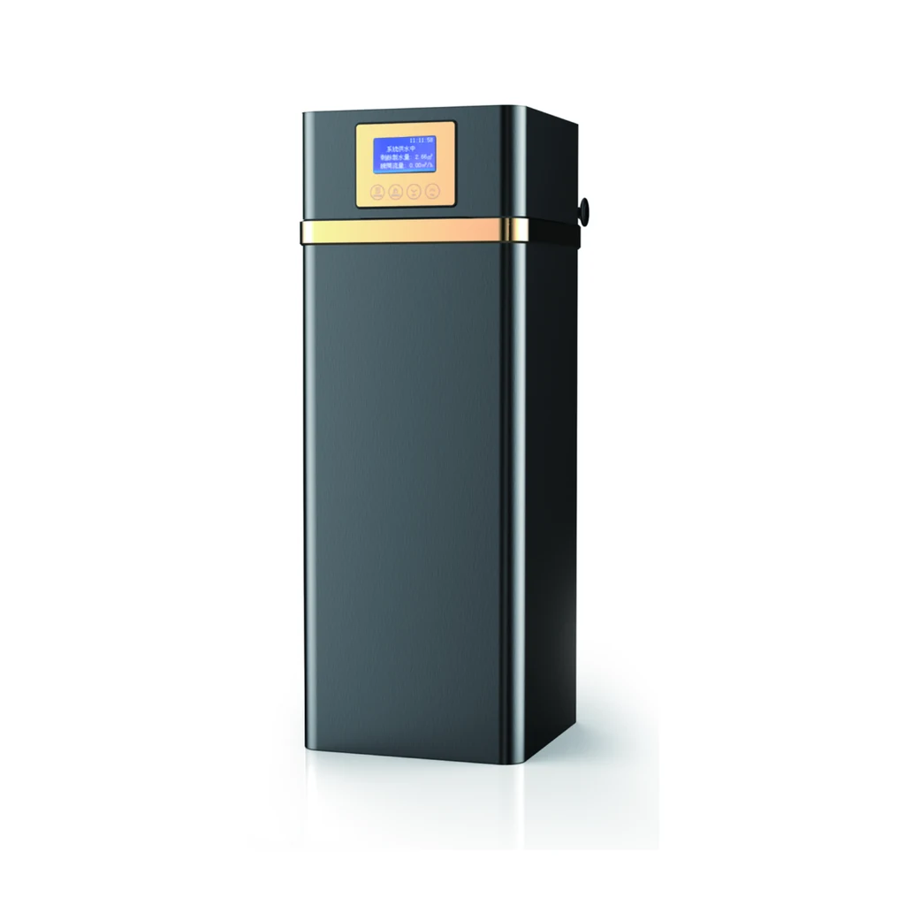
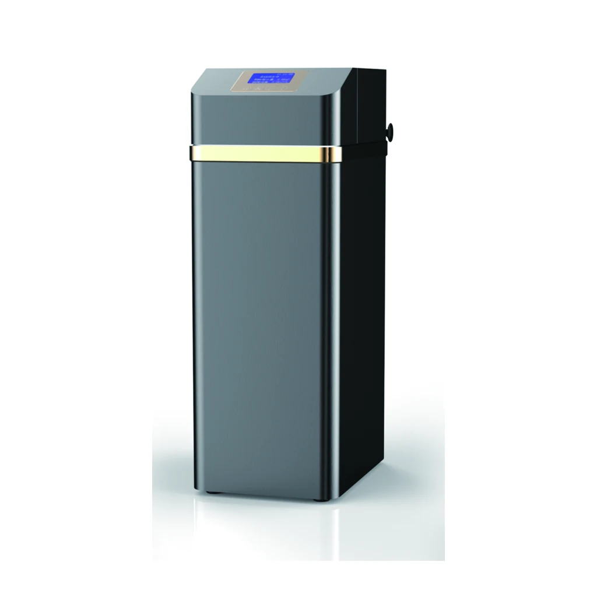
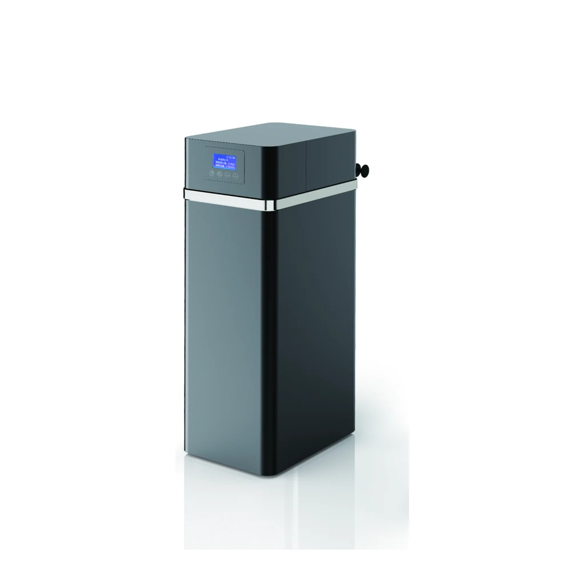
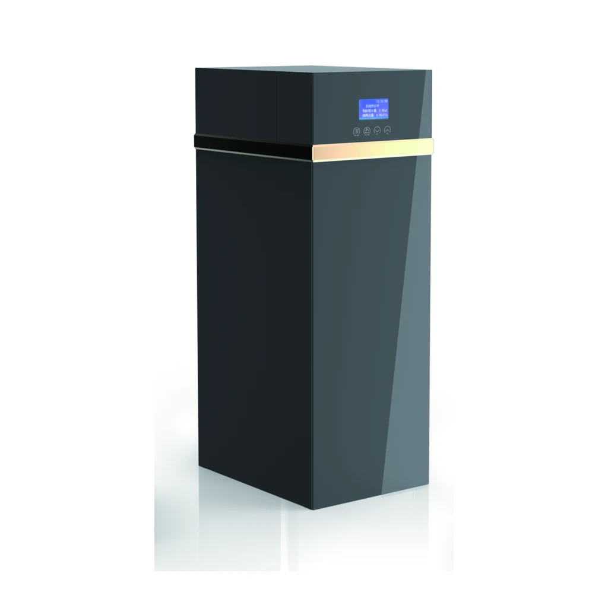
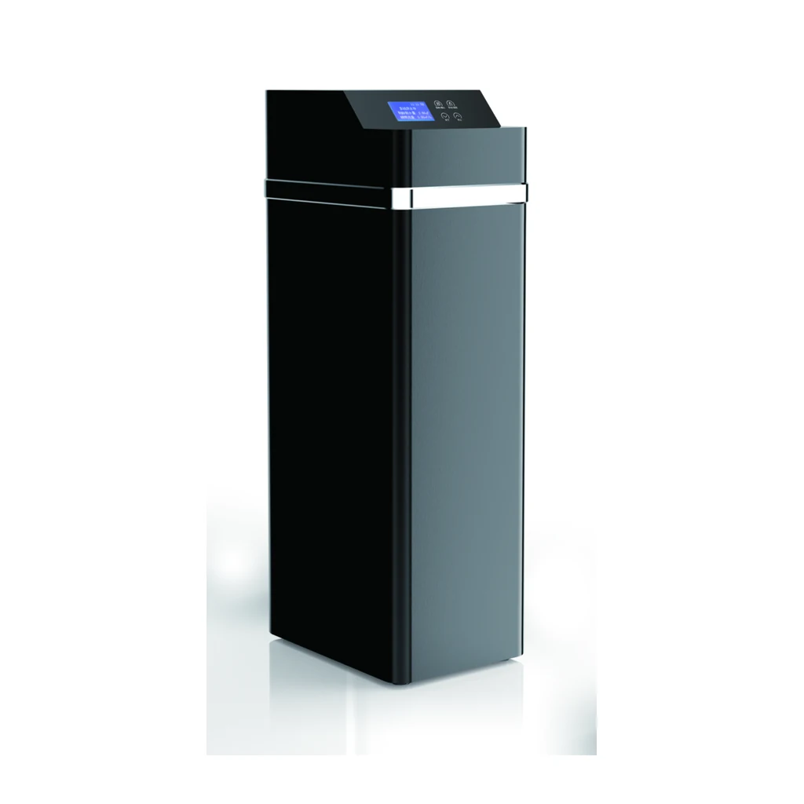

Automatic Water Filter
YC-J Automatic Water Filter Series
Compare three rectangular-cabinet automatic filter models by source-listed flow rate, activated-carbon volume, FRP tank size and enclosure size.
Compare seriesCompare automatic water filters separately from automatic water softeners. Public model identifiers use the owner-approved YC naming, while flow, media or resin volume, FRP tank size, valve details and cabinet dimensions preserve the reviewed source notation.
Every series page contains three exact model IDs and a complete HTML specification comparison.

Compare three rectangular-cabinet automatic filter models by source-listed flow rate, activated-carbon volume, FRP tank size and enclosure size.
Compare series
Compare the cylindrical YC-JA cabinet family across three source-listed flow, activated-carbon and FRP tank configurations.
Compare series
The YC-R family groups three automatic softener cabinet sizes with the same source-listed valve mode, connection and pressure range.
Compare series
The YC-RA suffix identifies a distinct source-shown cabinet family while preserving the reviewed 12 L, 18 L and 25 L resin-volume ladder.
Compare series
The YC-RB family presents three source-shown cabinet heights with reviewed automatic softener valve and regeneration-mode facts.
Compare series
The YC-RC family uses the confirmed A-series parameter values with C model suffixes and its own source-shown cabinet images.
Compare series
The YC-RD family uses the confirmed B-series parameter values with D model suffixes and its own source-shown cabinet images.
Compare seriesThe reviewed filter source lists an automatic filter valve, activated-carbon volume and FRP tank size. It does not state a media grade, certification or guaranteed treatment result.
The reviewed softener source lists an automatic softener valve, regeneration mode, resin volume, brine valve and FRP tank size. It does not state resin chemistry or rated softening capacity.
Use flow, media or resin volume, tank size and cabinet size as quotation inputs; confirm water conditions separately.
| Model | Series | Flow Rate | Activated Carbon Volume | FRP Tank Size | Product Size(with By-pass) |
|---|---|---|---|---|---|
| YC-J1000 | YC-J | ≤1.0T/H | 12L | 1015 | 278X278X510mm |
| YC-J2000 | YC-J | ≤2.0T/H | 18L | 1024 | 278X278X710mm |
| YC-J3000 | YC-J | ≤3.0T/H | 25L | 1035 | 278X278X1020mm |
| YC-J1000A | YC-JA | ≤1.0T/H | 12L | 1015 | 299X299X567mm |
| YC-J2000A | YC-JA | ≤2.0T/H | 18L | 1024 | 299X299X781mm |
| YC-J3000A | YC-JA | ≤3.0T/H | 25L | 1035 | 299X299X1070mm |
| Model | Series | Flow Rate | Resin Volume | FRP Tank Size | Product Size(with By-pass) |
|---|---|---|---|---|---|
| YC-R1000 | YC-R | ≤1.0T/H | 12L | 1015 | 270X420X510mm |
| YC-R2000 | YC-R | ≤2.0T/H | 18L | 1024 | 270X420X710mm |
| YC-R3000 | YC-R | ≤3.0T/H | 25L | 1035 | 270X420X1020mm |
| YC-R1000A | YC-RA | ≤1.0T/H | 12L | 1015 | 270X420X510mm |
| YC-R2000A | YC-RA | ≤2.0T/H | 18L | 1024 | 270X420X710mm |
| YC-R3000A | YC-RA | ≤3.0T/H | 25L | 1035 | 270X420X1020mm |
| YC-R1000B | YC-RB | ≤1.0T/H | 12L | 1015 | 270X420X510mm |
| YC-R2000B | YC-RB | ≤2.0T/H | 18L | 1024 | 270X420X710mm |
| YC-R3000B | YC-RB | ≤3.0T/H | 25L | 1035 | 270X420X1020mm |
| YC-R1000C | YC-RC | ≤1.0T/H | 12L | 1015 | 270X420X510mm |
| YC-R2000C | YC-RC | ≤2.0T/H | 18L | 1024 | 270X420X710mm |
| YC-R3000C | YC-RC | ≤3.0T/H | 25L | 1035 | 270X420X1020mm |
| YC-R1000D | YC-RD | ≤1.0T/H | 12L | 1015 | 270X420X510mm |
| YC-R2000D | YC-RD | ≤2.0T/H | 18L | 1024 | 270X420X710mm |
| YC-R3000D | YC-RD | ≤3.0T/H | 25L | 1035 | 270X420X1020mm |
The 3000-size model in each family lists ≤3.0T/H. This is source notation, not a guaranteed site capacity.
No. The reviewed filters list activated-carbon volume, while the softeners list resin volume and a regeneration mode.
No. The approved source does not provide certification or performance-test claims.